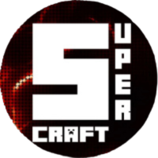

|  |
مرحبا بكم في
|
|
|
الكريبر ما يفجر البلوكات وفي نفس الوقت تقدر تزاوج القرويين |

|
تقدر تصنع مصعد باستخدام بلوكة الصوف وحبة اندر بيرل عن طريق رمي الاندر بيرل فوق بلوكة الصوف للمزيد من المعلومات اضغط على هذا الرابط |

|
تقدر تخزن الاكس بي في زجاجات عن طريق انك تمسك الزجاجة بيدك وتفتح مكتبة التطوير والزجاجة بتتعبى اكس بي وعشان تخرج الاكس بي من الزجاجة لازم تحط الزجاجة بالفرن |